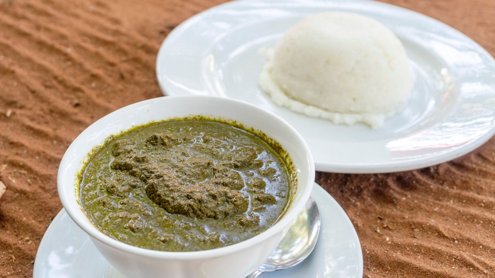

Mozambican Matapa

Photo description: Matapa served and ready to be eat
Matapa Matapa is, in Mozambique, the dish made with pounded cassava leaves, cooked in a sauce based on pounded peanuts and coconut milk and seasoned with shellfish, which can be shrimp or crab. It is usually served with xima or white rice.
Shall we learn to prepare?
Ingredients you will need
- 750 g raw peanuts;
- 1 unit of dried coconut;
- 1 kg of dried shrimp or crab;
- 1 kg of kale or cassava leaves;
- 2 liters of water;
- salt to taste.
How to prepare Matapa?
- The peanuts are crushed into a powder and dissolved in about half a liter of water;
- Grate the coconut pulp and squeeze it in a sieve, adding little by little the remaining liter and a half of water in order to extract all the milk from the coconut;
- Add this coconut milk to the water with the peanuts;
- Mix the manioc or cabbage leaves of a thickness of a little more or less than 2 cm;
- Cook the cassava leaves (without water) for half an hour;
- If they are cabbage leaves, add a small amount of water to make them very tender;
- In a pan, heat the mixture of coconut milk and peanut water, and when it starts to boil, add the manioc leaves or cabbage and season with salt;
- Finally, add the prawns or crabs that have already been prepared and cooked and let it simmer for an hour and a half over a low heat;
- Serve with white rice.
Thats it!! I hope you enjoyed it